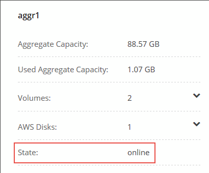

Demander de modifier un document
Demander de modifier un document Modifier sur GitHub
Modifier sur GitHub Guide des contributeurs
Guide des contributeursConsultez les documents sur la dernière version.
Mise à jour du logiciel Cloud Volumes ONTAP
Contributeurs
Cloud Manager inclut plusieurs options que vous pouvez utiliser pour mettre à niveau vers la version actuelle de Cloud Volumes ONTAP ou pour mettre à niveau Cloud Volumes ONTAP vers une version antérieure. Vous devez préparer les systèmes Cloud Volumes ONTAP avant de mettre à niveau ou de mettre à niveau le logiciel.
Les mises à jour logicielles doivent être effectuées par Cloud Manager
La mise à niveau d’Cloud Volumes ONTAP doit être effectuée depuis Cloud Manager. Vous ne devez pas mettre à niveau Cloud Volumes ONTAP à l’aide de System Manager ou de l’interface de ligne de commandes. Cela peut affecter la stabilité du système.
Méthodes de mise à jour de Cloud Volumes ONTAP
Cloud Manager affiche une notification dans les environnements de travail Cloud Volumes ONTAP lorsqu’une nouvelle version de Cloud Volumes ONTAP est disponible :

Vous pouvez lancer le processus de mise à niveau à partir de cette notification, qui automatise le processus en obtenant l’image logicielle à partir d’un compartiment S3, en installant l’image, puis en redémarrant le système. Pour plus de détails, voir Cloud Volumes ONTAP from Cloud Manager notifications.

|
Pour les systèmes HA dans AWS, Cloud Manager peut mettre à niveau le médiateur HA dans le cadre du processus de mise à niveau. |
Options avancées pour les mises à jour logicielles
Cloud Manager propose également les options avancées suivantes pour la mise à jour du logiciel Cloud Volumes ONTAP :
-
Mises à jour logicielles à l’aide d’une image sur une URL externe
Cette option est utile si Cloud Manager ne peut pas accéder à la rubrique S3 pour mettre à niveau le logiciel, si un correctif vous a été fourni, ou si vous souhaitez rétrograder le logiciel vers une version spécifique.
Pour plus de détails, voir or downgrading Cloud Volumes ONTAP by using an HTTP or FTP server.
-
Mises à jour logicielles à l’aide de l’autre image du système
Vous pouvez utiliser cette option pour revenir à la version précédente en faisant de l’image logicielle alternative l’image par défaut. Cette option n’est pas disponible pour les paires HA.
Pour plus de détails, voir Cloud Volumes ONTAP by using a local image.
Préparation de la mise à jour du logiciel Cloud Volumes ONTAP
Avant d’effectuer une mise à niveau ou une mise à niveau vers une version antérieure, vous devez vérifier que vos systèmes sont prêts et apporter les modifications de configuration requises.
-
for downtime
-
version requirements
-
that automatic giveback is still enabled
-
SnapMirror transfers
-
that aggregates are online
Planifier des temps d’indisponibilité
Lorsque vous mettez à niveau un système à un seul nœud, le processus de mise à niveau met le système hors ligne pendant 25 minutes au cours desquelles les E/S sont interrompues.
La mise à niveau d’une paire haute disponibilité s’effectue sans interruption et les E/S sont continues. Au cours de ce processus de mise à niveau sans interruption, chaque nœud est mis à niveau en tandem afin de continuer à traiter les E/S aux clients.
Révision des exigences de version
La version de ONTAP que vous pouvez mettre à niveau ou rétrograder varie en fonction de la version de ONTAP actuellement exécutée sur votre système.
Pour comprendre les exigences de version, reportez-vous à la section "Documentation ONTAP 9 : configuration requise pour la mise à jour du cluster".
Vérifier que le rétablissement automatique est toujours activé
Le rétablissement automatique doit être activé sur une paire Cloud Volumes ONTAP HA (paramètre par défaut). Si ce n’est pas le cas, l’opération échouera.
Suspension des transferts SnapMirror
Si un système Cloud Volumes ONTAP a des relations SnapMirror actives, il est préférable de suspendre les transferts avant de mettre à jour le logiciel Cloud Volumes ONTAP. La suspension des transferts empêche les défaillances de SnapMirror. Vous devez suspendre les transferts depuis le système de destination.
Ces étapes décrivent l’utilisation de System Manager pour la version 9.3 et ultérieure.
-
"Connectez-vous à System Manager" à partir du système de destination.
-
Cliquez sur protection > relations.
-
Sélectionnez la relation et cliquez sur opérations > Quiesce.
Vérifier que les agrégats sont en ligne
Les agrégats pour Cloud Volumes ONTAP doivent être en ligne avant de mettre à jour le logiciel. Les agrégats doivent être en ligne dans la plupart des configurations, mais si ce n’est pas le cas, vous devez les mettre en ligne.
Ces étapes décrivent l’utilisation de System Manager pour la version 9.3 et ultérieure.
-
Dans l’environnement de travail, cliquez sur l’icône de menu, puis sur Avancé > allocation avancée.
-
Sélectionnez un agrégat, cliquez sur Info, puis vérifiez que l’état est en ligne.

-
Si l’agrégat est hors ligne, utilisez System Manager pour mettre l’agrégat en ligne :
-
Cliquez sur stockage > agrégats et disques > agrégats.
-
Sélectionnez l’agrégat, puis cliquez sur plus d’actions > État > en ligne.
Mise à niveau d’Cloud Volumes ONTAP à partir des notifications Cloud Manager
Cloud Manager vous avertit lorsqu’une nouvelle version d’Cloud Volumes ONTAP est disponible. Cliquez sur la notification pour lancer le processus de mise à niveau.
Les opérations de Cloud Manager telles que la création de volumes ou d’agrégats ne doivent pas être en cours pour le système Cloud Volumes ONTAP.
-
Cliquez sur environnements de travail.
-
Sélectionnez un environnement de travail.
Une notification s’affiche dans le volet droit si une nouvelle version est disponible :
-
Si une nouvelle version est disponible, cliquez sur Upgrade.
-
Dans la page informations sur la version, cliquez sur le lien pour lire les notes de version de la version spécifiée, puis cochez la case J’ai lu….
-
Dans la page du contrat de licence utilisateur final (CLUF), lisez le CLUF, puis sélectionnez J’ai lu et approuvé le CLUF.
-
Dans la page Revue et approbation, lisez les notes importantes, sélectionnez Je comprends…, puis cliquez sur Go.
Cloud Manager démarre la mise à niveau logicielle. Vous pouvez effectuer des actions sur l’environnement de travail une fois la mise à jour logicielle terminée.
Si vous avez suspendu les transferts SnapMirror, utilisez System Manager pour reprendre les transferts.
Mise à niveau ou mise à niveau vers une version antérieure de Cloud Volumes ONTAP à l’aide d’un serveur HTTP ou FTP
Vous pouvez placer l’image du logiciel Cloud Volumes ONTAP sur un serveur HTTP ou FTP, puis lancer la mise à jour du logiciel à partir de Cloud Manager. Vous pouvez utiliser cette option si Cloud Manager ne peut pas accéder à la rubrique S3 pour mettre à niveau le logiciel ou si vous souhaitez mettre à niveau le logiciel.
-
Configurez un serveur HTTP ou FTP pouvant héberger l’image du logiciel Cloud Volumes ONTAP.
-
Si vous disposez d’une connexion VPN au réseau virtuel, vous pouvez placer l’image logicielle Cloud Volumes ONTAP sur un serveur HTTP ou un serveur FTP de votre propre réseau. Sinon, vous devez placer le fichier sur un serveur HTTP ou FTP dans le cloud.
-
Si vous utilisez votre propre groupe de sécurité pour Cloud Volumes ONTAP, assurez-vous que les règles de sortie autorisent les connexions HTTP ou FTP pour que Cloud Volumes ONTAP puisse accéder à l’image logicielle.
Le groupe de sécurité Cloud Volumes ONTAP prédéfini autorise les connexions HTTP et FTP sortantes par défaut. -
Obtenez l’image logicielle de "Le site de support NetApp".
-
Copiez l’image du logiciel dans le répertoire du serveur HTTP ou FTP à partir duquel le fichier sera servi.
-
Dans l’environnement de travail de Cloud Manager, cliquez sur l’icône de menu, puis sur Avancé > mettre à jour Cloud Volumes ONTAP.
-
Sur la page de mise à jour du logiciel, choisissez sélectionnez une image disponible à partir d’une URL, saisissez l’URL, puis cliquez sur Modifier l’image.
-
Cliquez sur Continuer pour confirmer.
Cloud Manager démarre la mise à jour logicielle. Vous pouvez effectuer des actions sur l’environnement de travail une fois la mise à jour logicielle terminée.
Si vous avez suspendu les transferts SnapMirror, utilisez System Manager pour reprendre les transferts.
Déclassement de Cloud Volumes ONTAP à l’aide d’une image locale
Le passage de Cloud Volumes ONTAP à une version antérieure dans la même famille de versions (par exemple, 9.5 à 9.4) est appelé une version antérieure. Vous pouvez rétrograder sans assistance lors de la rétrogradation de clusters nouveaux ou de tests, mais vous devez contacter le support technique si vous souhaitez rétrograder un cluster de production.
Chaque système Cloud Volumes ONTAP peut contenir deux images logicielles : l’image en cours d’exécution et une autre image que vous pouvez démarrer. Cloud Manager peut modifier l’image alternative comme image par défaut. Vous pouvez utiliser cette option pour revenir à la version précédente de Cloud Volumes ONTAP, si vous rencontrez des problèmes avec l’image actuelle.
Ce processus de mise à niveau vers une version antérieure est uniquement disponible pour les systèmes Cloud Volumes ONTAP. Il n’est pas disponible pour les paires HA.
-
Dans l’environnement de travail, cliquez sur l’icône de menu, puis sur Avancé > mettre à jour Cloud Volumes ONTAP.
-
Sur la page mise à jour du logiciel, sélectionnez l’image de remplacement, puis cliquez sur changer l’image.
-
Cliquez sur Continuer pour confirmer.
Cloud Manager démarre la mise à jour logicielle. Vous pouvez effectuer des actions sur l’environnement de travail une fois la mise à jour logicielle terminée.
Si vous avez suspendu les transferts SnapMirror, utilisez System Manager pour reprendre les transferts.